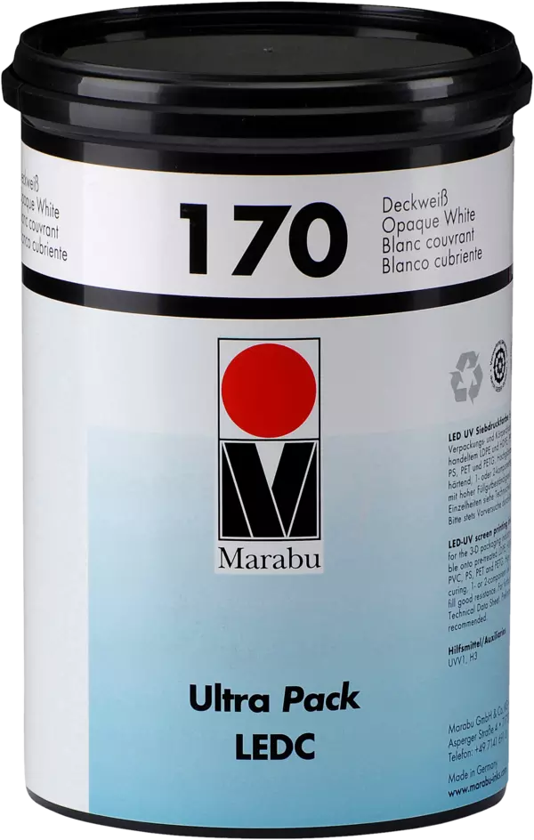

LED-CURABLE
Ultra Pack LEDC
The screen printing ink Ultra Pack LEDC is especially suitable for direct printing onto plastic packaging and containers. It is LED-curing and convinces with its adhesion, opacity, and gloss level.
Request a quote